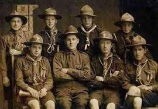

El escultismo (del inglés scouting, que significa explorar) es un movimiento infantil y juvenil que busca educar a niños y jóvenes, principal o exclusivamente, con base en valores ideológicos y juego al aire libre como método de enseñanza no formal, que actualmente está presente en 165 países y territorios, con aproximadamente 40.000.000 de miembros en todo el mundo, agrupados en distintas organizaciones. El Movimiento Scout nació como una manera de combatir la delincuencia en la Inglaterra de principios del siglo XX, buscando el desarrollo físico, espiritual y mental de los jóvenes para que llegaran a ser «buenos ciudadanos» a través de un método específico inspirado en la vida militar y al aire libre cuyas directrices serían establecidas en el manual Escultismo para muchachos (1908), del coronel británico Robert Stephenson Smith Baden-Powell of Gilwell, que en 1909 fue nombrado caballero y recibió el título de sir, pasando a ser lord Baden-Powell, I barón de Gilwell.
Estando en la Segunda Guerra Matabele en Rodesia en 1896, Baden-Powell inició una amistad con el Jefe de Exploradores del ejército colonial británico, el conocido explorador militar estadounidense Frederick Russell Burnham,1? que fue una influencia decisiva para él, también explorador militar, hasta el punto de que muchas de sus ideas relativas al escultismo se forjaron a raíz de esta relación con Burnham,2? al que Baden-Powell admiró y con el que mantuvo amistad de por vida.nota 1? Burnham le dio a conocer las costumbres de los vaqueros y los indios del oeste americano y del conocimiento de los bosques3?, y fue en esos inicios cuando Baden-Powell usó su sombrero Stetson por primera vez y comenzó a idear un programa de formación para muchachos, 4? que años después se convertiría en el sistema pedagógico del escultismo.5? Con las técnicas de reconocimiento y exploración que aprendió de Burnahm, Baden-Powell publicó un primer manual, Aids to Scouting,6? en 1899, destinado al Ejército.
El Método Scout es el sistema de auto educación progresiva, complementario de la familia y de la escuela, que se desarrolla a partir de la interacción de varios elementos, entre los cuales se destacan: La educación en valores expresados en una promesa y una ley a los que se adhiere voluntariamente;